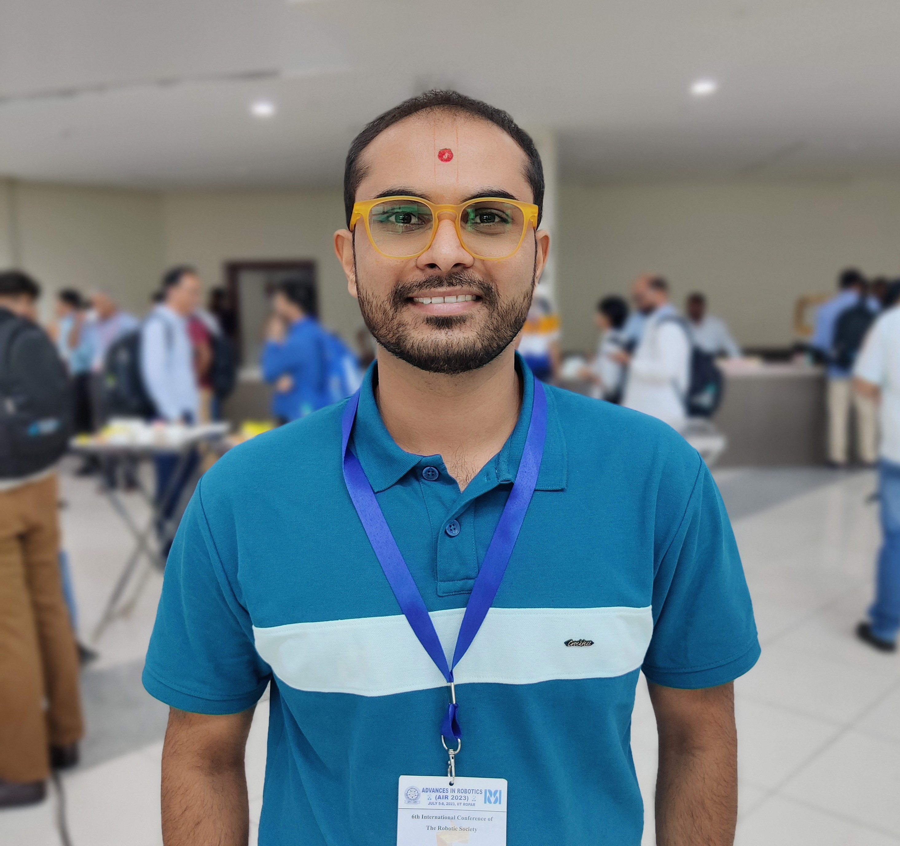
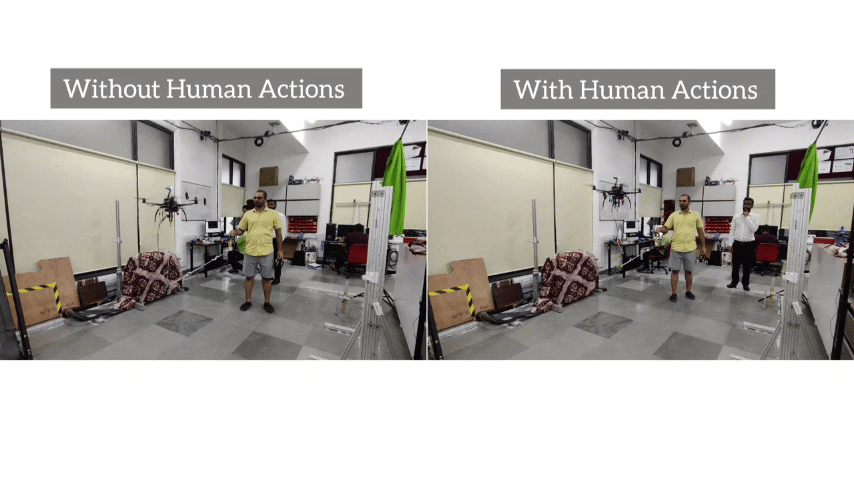
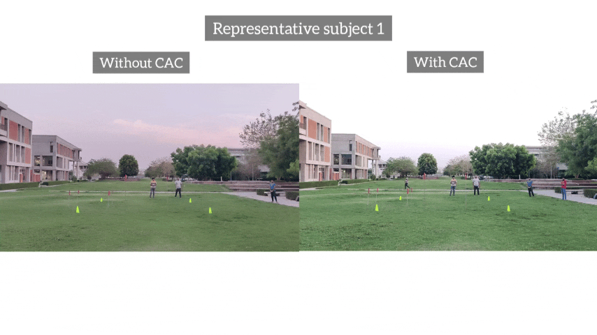
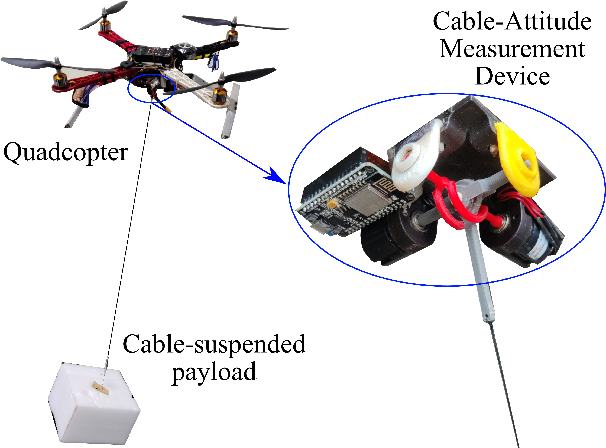
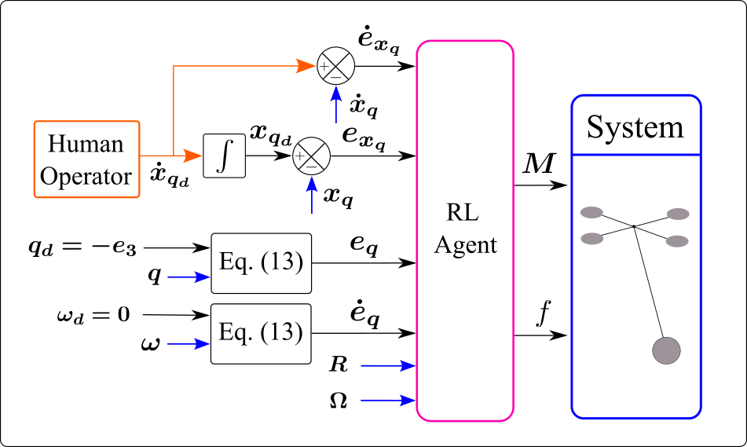
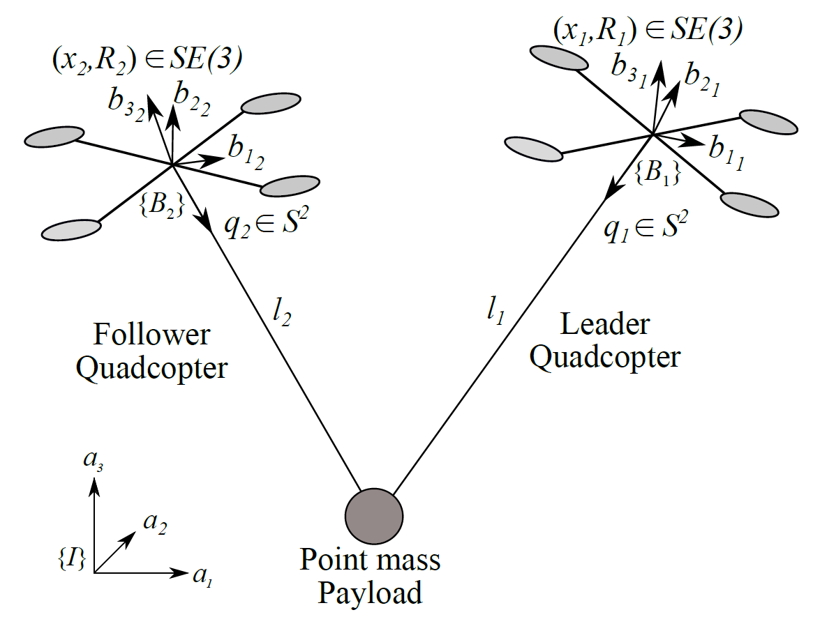
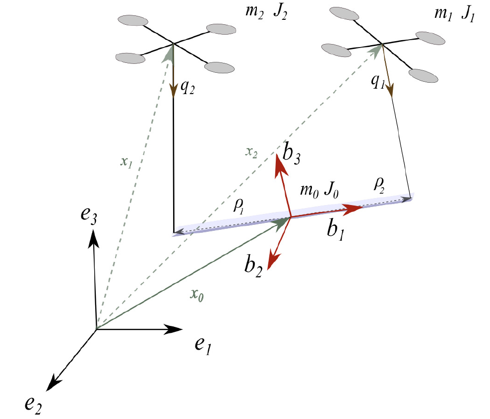

Pratik Prajapati, Ph.D.
Postdoctoral Research Fellow
Multi-robot Systems Group
Advisor: Prof. Martin
Saska
Research Interests -
Robotics: Aerial robotics, Human-robot interaction
Control Systems: Nonlinear control, Differential geometry, Adaptive control, Model predictive
control,
Impedance control, Data-driven control
Work Experience
-
Software Engineer, Fly4Future s.r.o., August 2026 - Now
Lead Engineer - Planning and Control for Multi-UAV Interceptors Carrying a Big Net -
Software Engineer, EAGLE.ONE s.r.o., January 2026 - Now
Control Engineer - Robust Flight Stabilization for Autonomous Interceptor UAV -
Postdoctoral Research Fellow, Multi-robot Systems Group, Czech Technical University in Prague, March 2025 - Now
-
Research Associate 1, Human-Centered Robotics Lab, Indian Institute of Technology Gandhinagar, India, Aug 2024 - Dec 2024
Education
-
Ph.D. in Robotics, Mechanical Engineering Department, Indian Institute of Technology (IIT) Gandhinagar, India, 2019 - 2024 (CGPA 9.42/10)
Thesis: Human-Aerial Robot Interaction for Payload Transportation
Advisor: Prof. Vineet Vashista -
M.Tech. with research work, Mechanical Engineering Department, Indian Institute of Technology (IIT) Gandhinagar, India, 2017 - 2019 (CGPA 8.63/10)
Thesis: Collaborative Transportation of Cable-Suspended Payload using Quadcopters with Human in the Loop
Advisor: Prof. Vineet Vashista -
Bachelor of Engineering, Mechanical Engineering Department, L.D.R.P. Institute of Technology and Research, Gandhinagar, India, 2012 - 2016 (CGPA 8.6/10)
Patent

Publications
Journals

Human-State-Aware Non-linear Control Framework For Physical Collaborative Aerial Transportation
Pratik Prajapati, Ravi N Banavar, and Vineet Vashista
IEEE Control Systems Letters, vol. 9, pp. 1363-1368, 2025 and presented in IEEE Conference on Decision and Control (CDC) 2025.

Aerial Physical
Human Robot Interaction for Payload Transportation
Pratik Prajapati, and Vineet Vashista
IEEE Robotics and Automation Letters, vol. 8, no. 8, pp. 4903-4910, Aug. 2023 | Oral Presentation at
ICRA 2024 Yokohama Japan

On-board cable attitude
measurement and controller for outdoor aerial transportation
Pratik Prajapati, Sagar Parikh, and Vineet Vashista
Robotica , Volume 40 , Issue 5 , May 2022 , pp. 1650 - 1664
Journals (under review)



Conferences

Compact and Lightweight Cable Attitude Measurement Device for Aerial Transportation Applications
Pratik Prajapati, and Vineet Vashista
TENCON 2024 - 2024 IEEE Region 10 Conference (TENCON), Singapore, Singapore, 2024, pp. 1954-1957, doi:
10.1109/TENCON61640.2024.10902676.
Aerial Physical Human Robot Interaction for Payload Transportation
Pratik Prajapati, and Vineet Vashista
2024 IEEE International Conference on Robotics and Automation (ICRA), Yokohama, Japan (oral presentation)

A Study on
Reinforcement Learning based Control of Quadcopter with a Cable-suspended Payload
Pratik Prajapati, Atul Patidar, and Vineet Vashista
In Proceedings of the 2023 6th International Conference on Advances in Robotics. Association for
Computing Machinery, New York, NY, USA, Article 75, 1–6,

Motion Planning and Control of Two Quadcopters with Cable-Suspended Point
Mass Payload
Pratik Prajapati, and Vineet Vashista
Recent Advances in Machines and Mechanisms, Springer, Singapore. 5th International and 20th National
Conference on Machines and Mechanisms, Dec 09-11, 2021

On the Human
Control of a Multiple Quadcopters with a Cable-suspended Payload System
Pratik Prajapati, Sagar Parikh, and Vineet Vashista. 2020 IEEE International Conference on
Robotics and Automation (ICRA), 2020, pp. 2253-2258

Collaborative Transportation of Cable-Suspended Payload using Two
Quadcopters with Human in the loop
Pratik Prajapati, Sagar Parikh, and Vineet Vashista. 2019 28th IEEE International Conference on
Robot and Human Interactive Communication (RO-MAN), 2019, pp. 1-6
Funding
-
Co-PI and Lead Engineer for SPRIND Funke - Anti-Drone Response 2.0, SPRIND, Federal Agency for Breakthrough Innovation, Germany, Mar 2026 - May 2027 (EUR 500,000) [Proposal Video]
-
Travel grant from IIT Gandhinagar to attend the International Conference on Robotics and Automation (ICRA 2024), Yokohama, Japan, May 2024 (USD 1740)
-
Nidhi Prayas prototype development grant from Department of Science & Technology, Government of India, March 2023 - March 2024 (USD 8400) [Project report]
-
SERB International Travel Support to attend "The IEEE RAS Summer School on Multi-Robot Systems" at Czech Technical University, Prague at CTU Prague, August 2022 (USD 2000)
Practical Experience
-
Controls: Significant hands-on experience in deploying nonlinear flight control algorithms on PX4/ArduPilot firmware in C/C++
-
Programming Languages: Python, C/C++, MATLAB, Simulink, Simscape
-
Tools: ROS/ROS2, Gazebo, V-REP, Git, LaTeX, Creo, Motion Capture System
-
Hardware Boards: Arduino, ESP8266, Portenta, Raspberry Pi
-
Operating Systems: Ubuntu, Windows
Academic Experience
-
Co-taught a short course at IITGN on "Quadrotor Modeling and Control", October 2023
Co-instructors - Prof. Ravi Banavar (IIT Bombay) and Prof. Vineet Vashista (IIT Gandhinagar) [Slides]
Invited Talks
-
Expert Talk on "The Future of Drones: Sensors, Control, and Human Interaction", Indrashil University, Gujarat, India, February 2025
-
Expert Talk on "The Future of Drones: Sensors, Control, and Human Interaction", Pandit Deendayal Energy University, Gandhinagar, Gujarat, India, February 2025
-
Expert session on "Drone Sensors" at SVIT Vasad, Gujarat, India, Faculty Development Program on "Drone Technology: Future Trends and Practical Applications", February 2024 [Slides]
-
Expert session on "Introduction to ROS", Advanced Robotics ME 691-XI (Instructor: Prof. Vineet Vashista), IIT Gandhinagar, August 2022 [Slides]
-
Lecture on "Quadcopters: Dynamics and Controls", Introduction to Robotics ME 639 (Instructor: Prof. Harish PM), IIT Gandhinagar, November 2021 [Slides]
Workshops Organized
-
"Coordinated Control of Physically Coupled Multi-UAV Systems", The IEEE RAS Summer School on Multi-Robot Systems at the Czech Technical University in Prague, August 2026
-
"Coordinated Control of Physically Coupled Multi-UAV Systems", The IEEE RAS Summer School on Multi-Robot Systems at the Czech Technical University in Prague, August 2025
-
Organizer: "V-REP and ROS workshop", IIT Gandhinagar, March 2019 - simulations and hands-on demonstration of ROS to 30 undergraduate and graduate students [Slides]
-
A hands-on tutorial on "Autodesk Inventor & Arduino Programming", INVENT@IITGN: an intensive summer program held by IIT Gandhinagar, June 2018 [Website]
Review Activities & Academic Visits
-
Reviewer: IEEE Robotics and Automation Letters (RA-L); IEEE/RSJ International Conference on Intelligent Robots and Systems (IROS)
-
Visiting researcher under the supervision of Prof. Ravi Banavar, System and Control Group, Indian Institute of Technology Bombay, India, December 2019
Awards
-
Won Bronze medal at Inter IIT Tech Meet 11.0 in the High Prep category for "Pluto Drone Swarm Challenge" organized by Drona Aviation, competing against the top 23 IITs. First-ever medal for IITGN in the High Prep category
-
Won best presenter award at Doctoral Symposium at the Advances in Robotics 2023 , 6th international conference of the robotic society at IIT Ropar, July 2023
-
Promoted to Senior Research Fellow (SRF) granted by Science and Engineering Research Board (SERB), Government of INDIA, July 2021-23
-
25,000 INR (~300 USD) Cash Award for Best Conference/Journal Publications (Semester-II, 2020-21) from IIT Gandhinagar, July 2021
Contact
Faculty of Electrical Engineering
Department of Cybernetics, CTU Prague
Karlovo namesti 13, 121 35 Prague 2, Czechia
Building E, Office KN:E-126
Email: prajapra@fel.cvut.cz